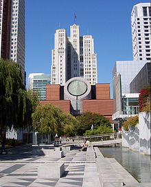

Культура в сан-франциско
Содержание
Музеи
Сан-Франциско обладает большим количеством музеев, самый известный из них — Музей современного искусства , где собраны экспонаты современности и XX-го столетия. Музей переехал в новое здание на Саут-оф-Маркет в 1995 году, коллекция притягивает около 600 тыс. посетителей в год. Дворец Лиджин-оф-Онор в основном демонстрирует европейские работы. Парк Золотые ворота знаменит своим музеем изящных искусств — М. Г. де Янг. Он был основан в 1894 году, но сильно повреждён после землетрясения Лома-Приета, в 2004 году он был закрыт на реконструкцию по проекту швейцарских архитекторов Херцога и де Мёрона, а открыт 15 октября 2005 года.
Так же, как и в Музее искусств Азии, в Музее де Янга выставлены не европейские работы. Музей искусств Азии имеет в своём распоряжении одну их самых больших коллекций в мире азиатских артефактов и работ. С 1958 до 2004 года все экспонаты находились в крыле Музея де Янга, но когда он был закрыт на реконструкцию, Музей искусств Азии переехал в здание библиотеки Сан-Франциско.
Музей Уолта Диснея в Сан-Франциско
Музей Уолта Диснея в Сан-Франциско открыт в октябре 2009 г. дочерью классика анимации Дианой Дисней Миллер. Разместился музей в парке Королевский форт Сан-Франциско. В экспозиции личные вещи Диснея, материалы к фильмам, сами фильмы, в том числе те, которые публика никогда не видела. В здании разместили 215 мониторов для показа лент и кинозал на 120 человек.
Музей русской культуры в Сан-Франциско
Музей существует с 1948 года. В нём собраны экспонаты со всего мира, представляющие историю русской эмиграции
Исполнительское искусство
Симфонические концерты, оперы и балет — довольно частые явления в Сан-Франциско, все они проходят в здании оперного театра «Памяти войны», в одном из крупнейших театров страны. Городской балет и опера являются самым старым видом исполнительного искусства в США. Город также является домом для Американской консерватории-театра (известна как А. К. Т.), которая сразу же после прибытия в Сан-Франциско в 1967 году стала ведущим театральным шоу в районе залива. Кроме того, в городе появился новый консерваторно-театральный центр, известный по постановке спектаклей не только для широкого круга зрителей, но и для людей с необычной сексуальной культурой.
Организация «Театр в районе залива» является главной компанией по продвижению театров. Это некоммерческая организация, её членами числятся 365 театров в районе залива Сан-Франциско. Организация «Театр в районе залива» является главным редактором журнала «Кэлборт».
Опера Сан-Франциско
Второй оперный театр в США. Первый — Метрополитен-опера в Нью-Йорке, основана в 1880 году. Опера Сан-Франциско основана в 1923 году итальянским дирижёром Джаетано Мелора. В 1932 году её домом стало новое здание Военно-мемориального дома оперы (архитекторы Артур Браун мл. и Густав Альберт Лансбург).
Популярная музыка
В период 1960-х годов Сан-Франциско был свидетелем формирования новых роковых направлений, начиная с «Звук Сан-Франциско». Две наиболее влиятельных группы из Сан-Франциско 60-х годов — Grateful Dead и Jefferson Airplane — начали свою карьеру в 1965 году. Также здесь начинали свою карьеру музыканты Слай Стоун и Карлос Сантана. Сан-Франциско был домом для знаменитой панк-рок-группы Dead Kennedys. В 80-х и в начале 90-х город был свидетелем многочисленных панк-рок, электронных, индастриал и рейв движений, которые повлияли на музыкальную культуру Сан-Франциско. В конце 90-х, во время первой волны «джентрификации» в городе, многим музыкантам пришлось уехать, немного обеднив творчество города. В Сан-Франциско, преимущественно в Филморе и Хантер-Пойнт, проживает большое количество рэп-исполнителей, наиболее знаменитые из них: Messy Marv, RBL Posse, Rappin' 4-Tay, San Quinn, JT the Bigga Figga и Paris. В городе большое доверие получило электронное направление музыки, на которое оказала влияние хаус-музыка Западного побережья и трансмузыка из Европы.